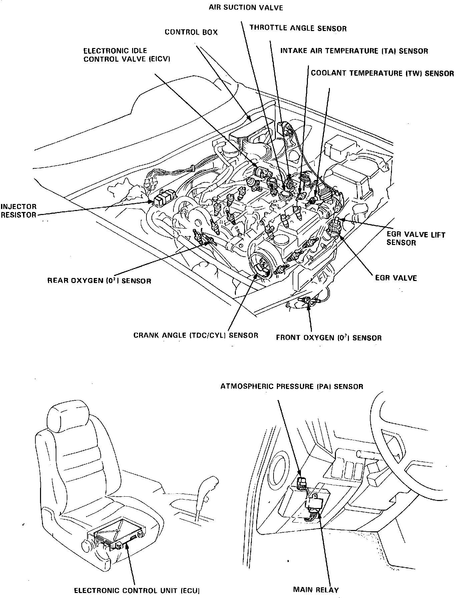

Operation CHARM
: Car repair manuals for everyone.
Home
>>
Acura
>>
1987
>>
Legend Coupe V6-2494cc 2.5L SOHC FI
>>
Repair and Diagnosis
>>
Powertrain Management
>>
Emission Control Systems
>>
Exhaust Gas Recirculation
>>
EGR Valve Position Sensor
>>
Locations
EGR Valve Position Sensor: Locations
1 of 2:
